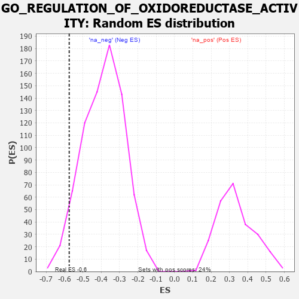

| | | Dataset | 7d |
| Phenotype | NoPhenotypeAvailable |
| Upregulated in class | na_neg |
| GeneSet | GO_REGULATION_OF_OXIDOREDUCTASE_ACTIVITY |
| Enrichment Score (ES) | -0.57500386 |
| Normalized Enrichment Score (NES) | -1.4867938 |
| Nominal p-value | 0.040843215 |
| FDR q-value | 0.20734653 |
| FWER p-Value | 1.0 |
Table: GSEA Results Summary
 Fig 1: Enrichment plot: GO_REGULATION_OF_OXIDOREDUCTASE_ACTIVITY
Fig 1: Enrichment plot: GO_REGULATION_OF_OXIDOREDUCTASE_ACTIVITY
Profile of the Running ES Score & Positions of GeneSet Members on the Rank Ordered List
| PROBE | GENE SYMBOL | GENE_TITLE | RANK IN GENE LIST | RANK METRIC SCORE | RUNNING ES | CORE ENRICHMENT | | 1 | AKT1 | | | 1040 | 0.476 | -0.0926 | No |
| 2 | CCS | | | 1302 | 0.427 | -0.0911 | No |
| 3 | OXA1L | | | 2355 | 0.252 | -0.2032 | No |
| 4 | PHB2 | | | 2712 | 0.197 | -0.2322 | No |
| 5 | COX17 | | | 3019 | 0.147 | -0.2589 | No |
| 6 | GCH1 | | | 3166 | 0.127 | -0.2670 | No |
| 7 | NOSIP | | | 3212 | 0.121 | -0.2630 | No |
| 8 | ECSIT | | | 4002 | -0.008 | -0.3616 | No |
| 9 | DDAH1 | | | 4056 | -0.016 | -0.3670 | No |
| 10 | PDP2 | | | 4098 | -0.023 | -0.3703 | No |
| 11 | ABL1 | | | 4125 | -0.027 | -0.3714 | No |
| 12 | GFI1 | | | 4168 | -0.037 | -0.3738 | No |
| 13 | LRRK2 | | | 4467 | -0.087 | -0.4042 | No |
| 14 | TERT | | | 4801 | -0.157 | -0.4335 | No |
| 15 | HDAC6 | | | 5183 | -0.244 | -0.4618 | No |
| 16 | VDR | | | 5517 | -0.325 | -0.4776 | No |
| 17 | SZT2 | | | 5882 | -0.429 | -0.4889 | No |
| 18 | RGN | | | 6233 | -0.547 | -0.4890 | Yes |
| 19 | EGFR | | | 6708 | -0.765 | -0.4872 | Yes |
| 20 | SPR | | | 7407 | -1.273 | -0.4727 | Yes |
| 21 | CALM1 | | | 7567 | -1.499 | -0.3723 | Yes |
| 22 | CALM3 | | | 7869 | -2.525 | -0.2073 | Yes |
| 23 | CAV3 | | | 7896 | -2.739 | 0.0094 | Yes |
Table: GSEA details [plain text format]

Fig 2: GO_REGULATION_OF_OXIDOREDUCTASE_ACTIVITY: Random ES distribution
Gene set null distribution of ES for GO_REGULATION_OF_OXIDOREDUCTASE_ACTIVITY